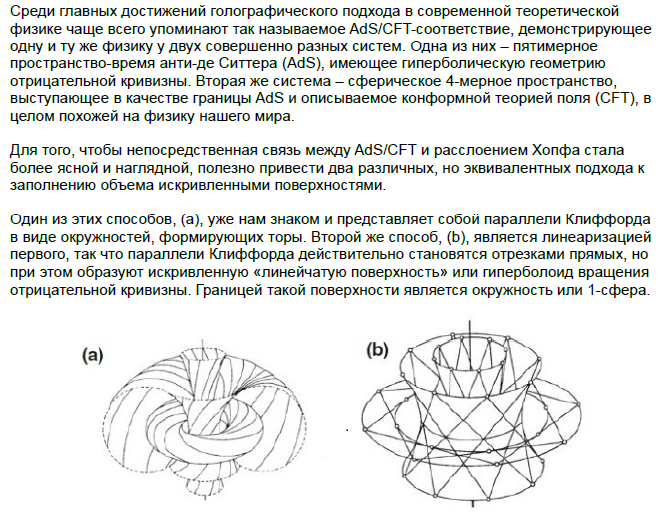
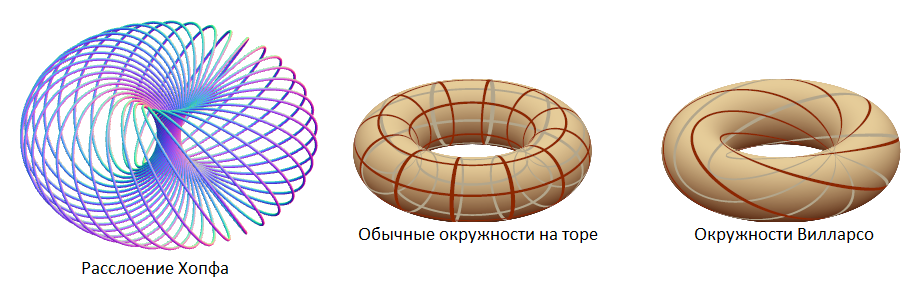
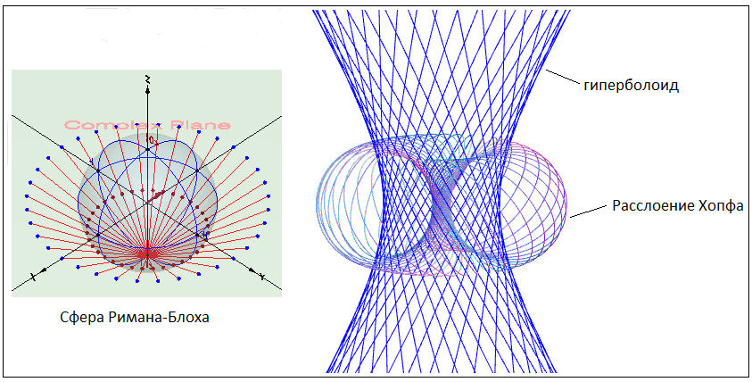
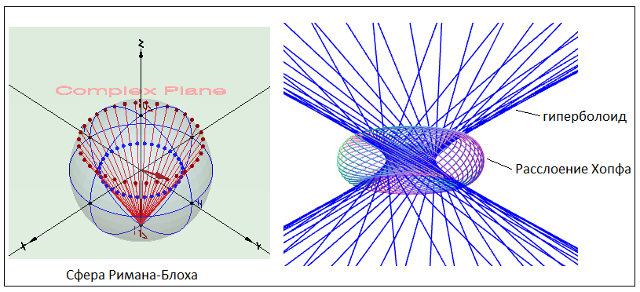
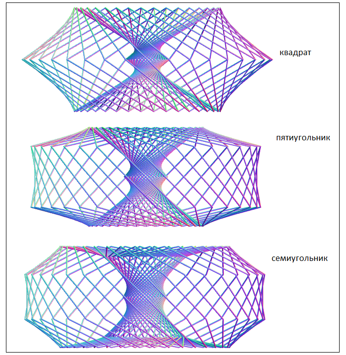
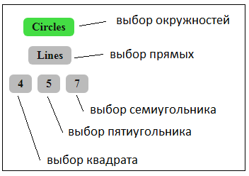
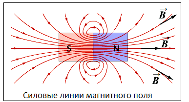

В следующем, довольно большом видеоролике, я попытался подробно показать, как использовать данную программу визуализации. Также в нем рассказано про то, что представляют собой квантовые вращения на сфере Римана-Блоха, стереографическая проекция и также затронул некоторые другие важные темы.
На сайте была показана визуализация расслоения Хопфа. Соответствующая программа была создана на основе сферы Римана-Блоха и стереографической проекции точек, принадлежащих этой сфере, на комплекную плоскость. Каждая точка этой сферы при визуализации расслоения Хопфа отображается в виде окружности на экран дисплея. Эти окружности называются или окружностями Хопфа, или параллелями Клиффорда, или окружностями Вилларсо. И Хопф, и Клиффорд и Вилларсо в разной степени оставили свой след в изучении данной области геометрии. Для движения точек по сфере Римана-Блоха, а, следовательно, и окружностей на торе, использовались квантовые вращения. Квантовые вращения подробно разбираются на этом сайте и другом сайте.
Вся теория расслоения Хопфа выводится из предположения, что каждой отдельной точке на сфере соответствует именно окружность. А что будет, если вместо окружности взять какой-либо другой геометрический объект? На первый взгляд это совершенно неприемлимо, так как изначально у нас есть трехмерная сфера и для того чтобы хоть как-то представить ее внешний вид, используются окружности. Подробнее про это говорится на на уже упомянутом сайте, на котором рассматриваются стандартные расслоения Хопфа.
Однако в геометрии иногда используется принцип двойственности. Например между точками и прямыми.
В нашем случае попробуем сопоставить каждой окружности отдельную прямую. Например в одной
работе
был найден следующий рисунок и текст:

В интернете кроме этого рисунка я ничего по этой теме больше не нашел.
Также, по всей видимости, никто не делал соответствующую компьютерную визуализацию.
Окружности, из которых состоит расслоение Хопфа, имеют следующий вид:

Создадим программу визуализации таким образом, чтобы окружности Вилларсо (параллели Клиффорда)
перешли в прямые линии. В результате этого получится гиперболоид вращения:


Можно попробовать взять вместо окружностей и прямых какие-либо другие геометрические объекты и сопоставить их точкам на сфере Римана-Блоха. Иметь глубокого смысла получившиеся визуализации совершенно не будут. Но сами результирующие изображения могут представлять интерес - получатся связки геометрических объектов, которые достаточно трудно получить другим способом. Любые две из окружностей на торе сцеплены и для создания программы изображающей эту сцепленность сложно придумать иной вариант, чем вариант предложенный для построения расслоения Хопфа.
На следующем скриншоте показаны, так сказать, "расслоения" полученные,
когда вместо окружностей Хопфа взяты квадрат, пятиугольник и семиугольник:

Заметим, что вектор состояния (квантовое состояние кубита) описывается как
|ψ〉 = a⋅|0〉 + b⋅|1〉
Для вектора состояния имеет значение только отношение в котором находятся между собой амплитуды вероятности a и b.
Поэтому можно безболезненно умножить обе составляющие вектора |ψ〉 на одно и то же число или даже функцию.
Поэтому, в общем случае (если забыть про исходную трехмерную сферу), имеются варианты - вместо окружности
взять другой геометрический объект (но это только мое предположение).
Интерфейс программы почти полностью совпадает с интерфейсом прогаммы приведенной на
сайте.
Добавлены только несколько кнопок для выбора геометрических объектов:

В заключение решил добавить рисунок силовых линий магнитного поля:

Этот рисунок почти полностью повторяет визулизацию расслоения Хопфа.
Судя по всему, это совершенно не случайное совпадение. Но, похоже, лишь небольшое
количество ученых обратило на этот факт внимание. Однако, вот что пишут по этому поводу
голландец Дирк Боумистер и американец Уильям Ирвин:
Уравнения Максвелла допускают любопытные решения, характеризуемые тем свойством, что все линии электрического и магнитного полей являются замкнутыми петлями, причем любые две электрические или магнитные линии являются зацепленными. Эти малоизвестные решения, сконструированные Раньядой, основаны на структуре расслоения Хопфа.
В моем репозитории можно увидеть довольно много статей и online-визуализаций касающихся квантовой механики и некоторых других геометрических тем.